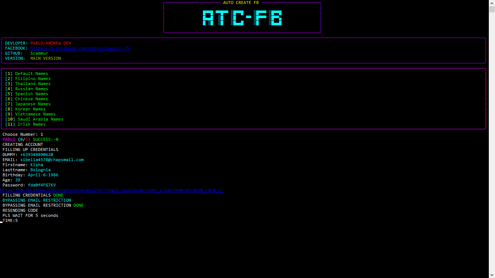
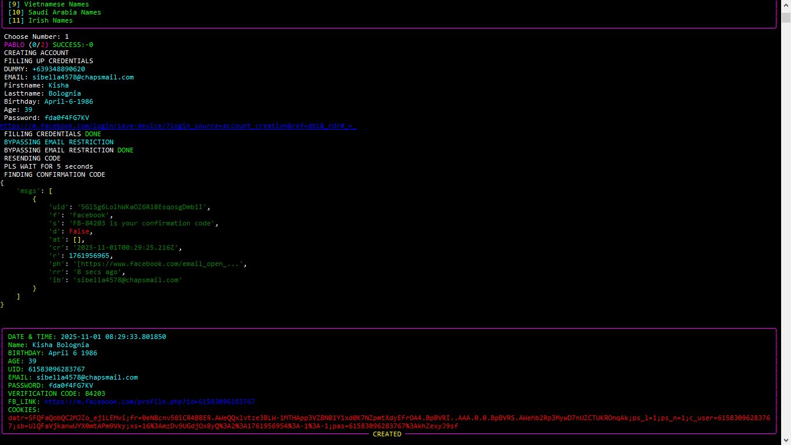

Welcome to My Portfolio
About Me
Hola, soy Pablo Y. Joaquín Guzmán de Cavite. Soy desarrollador junior y me dedico a la búsqueda de recompensas por errores del juego como pasatiempo; podría decirse que es mi hobby. Empecé a programar a los 12 años, en cuarto grado. ¿Quieren saber por qué? Cuando vi esa película de hackers, me entró mucha curiosidad: "¿Cómo lo hicieron?", y eso me motivó a aprender a programar. En 2017 comencé a estudiar ciberseguridad y a experimentar en sitios web de diferentes países.
Creé varias cosas (scripts de Python y trucos). La mayoría eran ilegales y algunas legales (jaja). Entre 2020 y 2022 fue mi época dorada creando trucos para diferentes juegos, especialmente CODM y PUBGM. Luego, entre 2023 y 2024, empecé a usar scripts más ilícitos, creando herramientas como programas de fuerza bruta y puertas traseras.
SKILLS
Wannabe Programmer
Lazy
Sleeping
Projects
Auto Create FB
 Una herramienta de automatización para crear cuentas de Facebook utilizando Python.
GITHUB